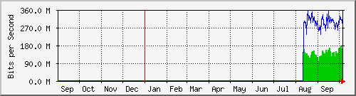

Traffic Analysis for Gi0/2 -- data-new.sky
| System: | data-new.sky in stoyka |
| Maintainer: | falcon@skyinet.org |
| Description: | GigabitEthernet0/2 |
| ifType: | ethernetCsmacd (6) |
| ifName: | Gi0/2 |
| Max Speed: | 125.0 MBytes/s |
| Ip: | 10.10.254.210 (No DNS name) |
The statistics were last updated Tuesday, 6 October 2015 at 13:35,
at which time 'data-new.sky' had been up for 12 days, 11:56:00.
`Daily' Graph (5 Minute Average)
|
Max |
Average |
Current |
| In |
393.0 Mb/s (39.3%) |
133.6 Mb/s (13.4%) |
50.4 Mb/s (5.0%) |
| Out |
703.0 Mb/s (70.3%) |
254.0 Mb/s (25.4%) |
115.1 Mb/s (11.5%) |
`Weekly' Graph (30 Minute Average)
|
Max |
Average |
Current |
| In |
381.7 Mb/s (38.2%) |
153.1 Mb/s (15.3%) |
174.0 Mb/s (17.4%) |
| Out |
642.5 Mb/s (64.3%) |
295.0 Mb/s (29.5%) |
290.0 Mb/s (29.0%) |
`Monthly' Graph (2 Hour Average)
|
Max |
Average |
Current |
| In |
342.5 Mb/s (34.2%) |
140.2 Mb/s (14.0%) |
151.2 Mb/s (15.1%) |
| Out |
673.4 Mb/s (67.3%) |
294.1 Mb/s (29.4%) |
270.4 Mb/s (27.0%) |
`Yearly' Graph (1 Day Average)

|
Max |
Average |
Current |
| In |
177.0 Mb/s (17.7%) |
135.8 Mb/s (13.6%) |
143.0 Mb/s (14.3%) |
| Out |
354.7 Mb/s (35.5%) |
297.2 Mb/s (29.7%) |
272.4 Mb/s (27.2%) |
| GREEN ### |
Incoming Traffic in Bits per Second |
| BLUE ### |
Outgoing Traffic in Bits per Second |